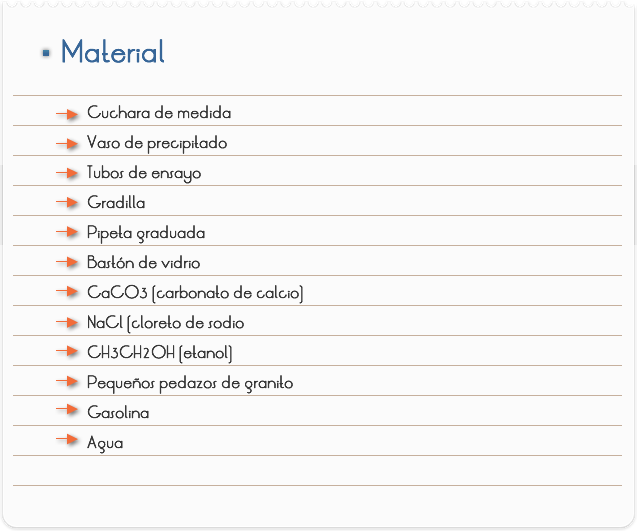
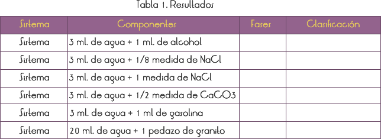

Introducción
En la naturaleza y en la industria las sustancias se presentan mezcladas. La mezcla es una asociación de dos o más sustancias diferentes, cuyas estructuras permanecen inalteradas (no sucede reacción química entre ellas). Cada parte, visualmente uniforme, de una o más especies de materia es denominada "fase".
Consideramos mezcla homogénea (sistema monofásico, solución) cuando no visualizamos fases y mezcla heterogénea (sistema polifásico) cuando podemos visualizarlas.
Objetivo
Identificar y clasificar una mezcla en homogénea o heterogénea.

1) Preparar las mezclas relacionadas en la Tabla 1. Enseguida, tapar, agitar, dejar en reposo por 5 minutos.
2) Analizar cada mezcla, determinando el número de fases.
3) Clasificar, completando la Tabla 1.

Cuestionario
RESULTADOS Y CONCLUSIONES
En nuestro experimento, estamos usando apenas la observación visual para analizar esas mezclas, por lo tanto, en el tubo 1 tenemos una mezcla homogénea (solución), el alcohol y el agua presentan naturaleza molecular semejante y siempre forman mezclas homogéneas. En el tubo 2 tenemos mezcla homogénea de una sola fase (solución).
En el tubo 3 tenemos una solución saturada de sal, el sistema es bifásico (una fase es la sal y la otra es la solución de agua + sal).
En el tubo 4 la sal carbonato de calcio (CaCO3) es insoluble en agua y, después de sacudir el sistema habrá formación de precipitado. Hay formación de dos fases (una fase es el precipitado – CaCO3 y la otra es la solución agua + sal).
En el tubo 5 tenemos una mezcla bifásica (el agua y la gasolina presentan naturaleza molecular diferente y siempre forman mezclas heterogéneas), por lo tanto, es una mezcla heterogénea.
En el vaso de precipitado tenemos el granito, sistema trifásico constituido por cuarzo (parte blanca), feldespato (parte negra) y mica (parte clara y brillante), y el agua. Esta mezcla presenta cuatro fases por lo tanto es heterogénea.